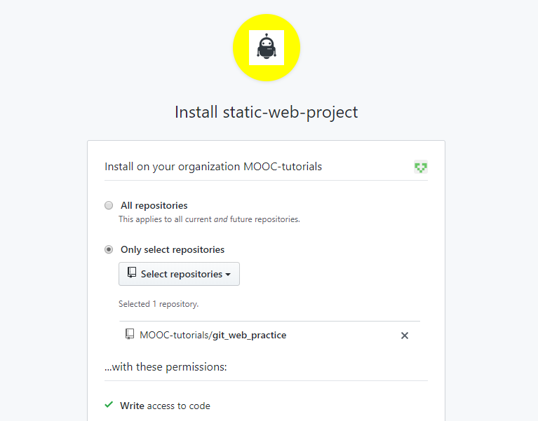

En este proyecto vamos a poner en práctica el conjunto de comandos básicos de git que se han aprendido hasta el momento. En esta oportunidad se le asignó realizar, junto con un equipo de trabajo automatizado, la corrección de una página web estática. La misma presenta múltiples errores y es prioridad de su equipo lograr corregirlos.
Por otro lado, el código se encuentra disponible en Github y a continuación se explica brevemente la configuración del ambiente de desarrollo necesaria para poder comenzar a trabajar. Posteriormente se explica la manera en que se le informará de los errores a corregir y las soluciones a implementar.
Debería observar una pantalla como la siguiente:

cd.git clone <URL del repositorio>.cd) a la carpeta raíz del repositorio. Ejecutando cd git_web_practice debería bastar.En este momento debería de contar con una copia local del repositorio con el código de la página web estática. Partiendo de esto ahora podemos hacer los cambios necesarios para corregir los errores. La idea general es arreglar este sitio teniendo en cuenta las instrucciones que irán apareciendo en la sección de issues en el repositorio en Github. Por cada arreglo especificado es necesario hacer un commit. Además, luego de cada commit, debe subir sus cambios locales mediante un push al repositorio remoto.
Los elementos a corregir podrá ir observandolos en su repositorio en Github (aparecerán dentro de sus issues asignados con el tag bug). Para empezar a trabajar, diríjase a la sección de issues de su repositorio. Allí encontrará el primer error a corregir.
En general, a partir de este momento cualquier información o acción a realizar sobre el repositorio o su trabajo le será reportada mediante un issue en la sección correspondiente en Github del repositorio.